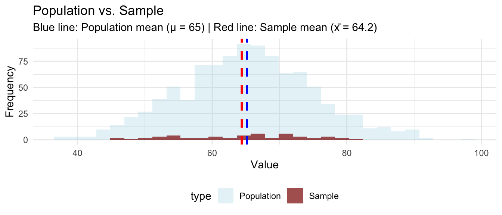
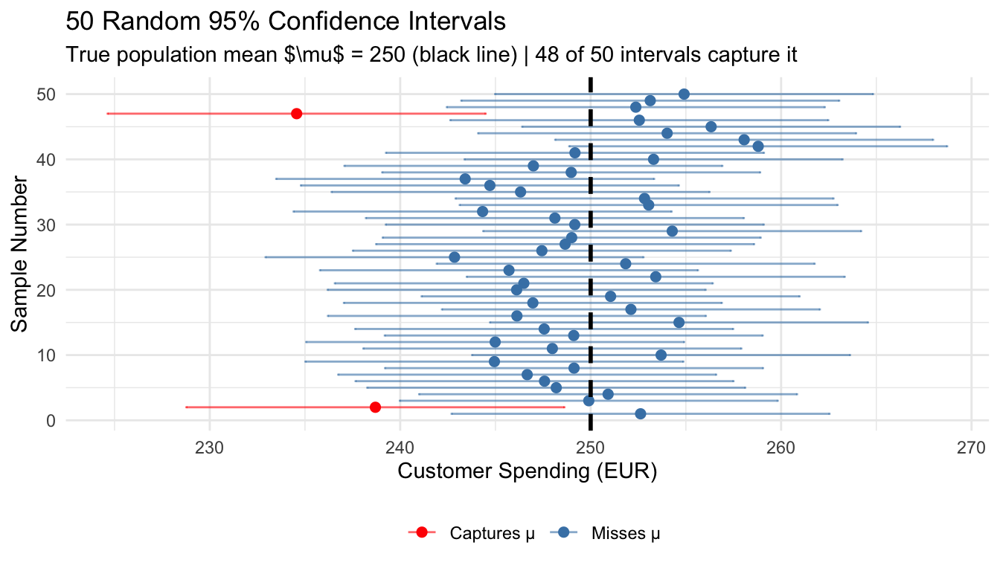
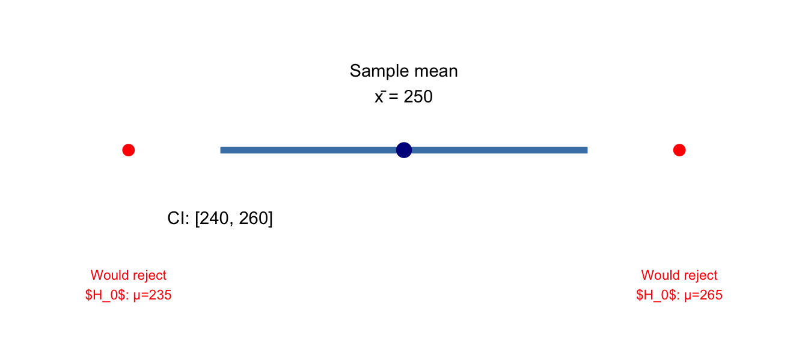
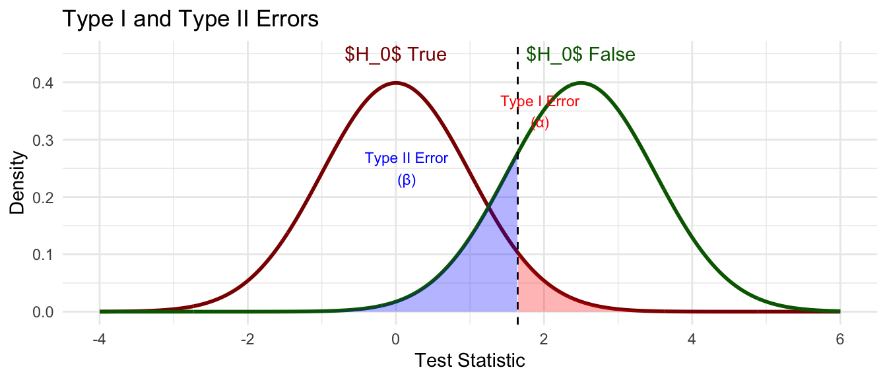

![]()
Packages used for R examples
library(dplyr)
library(tidyr)
library(ggplot2)
library(ggpubr)
library(latex2exp)
library(moderndive)
library(DataScienceExercises)
library(kableExtra)library(dplyr)
library(tidyr)
library(ggplot2)
library(ggpubr)
library(latex2exp)
library(moderndive)
library(DataScienceExercises)
library(kableExtra)In Lecture 11, you learned about the fundamental concepts of sampling: how we draw conclusions about unknown populations by studying samples, and how the Central Limit Theorem provides the theoretical foundation for making these inferences. Among the key take aways from this lecture were the following:
Now we face two crucial questions that arise in almost every business and research context:
Testing claims: “Someone claims the average customer satisfaction is 8.0/10. Based on my sample of 100 customers with mean 7.5, should I believe this claim?”
Quantifying uncertainty: “My sample of 500 SMEs in Schleswig Holstein shows average monthly revenue of EUR 50,000. What’s the plausible range for the true population mean of all SMEs in Schleswig Holstein?”
These questions represent two main approaches to statistical inference:
Both build directly on the sampling concepts you’ve learned, and both are essential for interpreting the regression models you’ll study in later lectures.
I suggest you read this tutorial after having heard the lecture on sampling. The concepts in this tutorial — particularly hypothesis testing — make much more sense once you’ve seen how sampling works through Monte Carlo simulations and understand sampling distributions intuitively. But if you feel more or less comfortable in these areas you can also read it directly after the recap text on probability theory as I also included a very concise recap of this session below.
By the end of this tutorial, you will be able to:
Before diving into inference, let’s briefly review the key concepts from our sampling section that form the foundation for everything in this session.

Key points to remember:
Population:
Sample:
The inference challenge:
This was one of the crucial statement from the sampling lecture: if we could draw many samples from the same population, each sample would give us a slightly different estimate due to sampling variation. While in reality we usually draw only one sample, the sampling distribution provides us with important information about how to interpret the results obtained from this single sample.
The sampling distribution describes how these sample statistics (like \(\bar{x}\)) are distributed across many different samples. This is relevant even (or especially) when we draw only sample as it helps us to quantify the uncertainty associated with using the statistics obtained from this sample.

In the cases where the Central Limit Theorem (CLT) holds, the sampling distribution has the following properties:
Why this matters:
Point estimate: A single number calculated from sample data to estimate a population parameter
An estimator is a procedure for producing an estimate. The most straightforward was to produce an estimate for a population parameter (say, \(\mu\)) is to choose its sample equivalent (here: \(\bar{x}\)).
But remember the cautionary tales at the end of the lecture: it is not always a good idea to use the sample equivalents directly, as, for instance, in the case of the sample variance of the sample maximum.
The fundamental problem: Point estimates alone don’t convey information about uncertainty!
If I tell you “average customer satisfaction is 7.5/10 based on my sample,” you should ask:
This is where hypothesis testing and confidence intervals come in. They both use the sampling distribution to quantify uncertainty in principled ways.
Imagine you’re a marketing manager who surveyed 100 customers about monthly spending. Your sample shows:
Question: What’s the true average spending for all customers (\(\mu\))?
Naive answer: “250 EUR”
Better answer: “Somewhere between 240 EUR and 260 EUR”
Best answer: “Based on a method that works 95% of the time, I can say that the true average lies in the interval between 240.2 and 259.8 EUR.”
❌ INCORRECT formulations:
Why these are wrong: Once you’ve calculated a specific interval from your data, the true parameter \(\mu\) either is or isn’t in that interval (probability = 1 or 0). The parameter is fixed, not random; the interval is what’s random (it varies from sample to sample). These phrasings incorrectly suggest we’re making probability statements about the parameter itself.
✅ CORRECT formulations:
Acceptable shorthand (with important caveats):
This phrasing is widely used and generally accepted in practice, but it’s imprecise. The word “confident” here should be understood as shorthand for “confident in the procedure that generated this interval,” not as subjective certainty about this particular interval.
The subtle but crucial distinction: This shorthand is acceptable because “confident” (unlike “probability” or “certain”) can refer to trust in a method rather than a claim about the parameter. However, it’s easily misunderstood, so use it carefully.
Best practice: When precision matters (academic writing, technical reports), use the explicit formulation about the procedure. In business contexts, the shorthand is acceptable if your audience understands it refers to the method’s reliability.
A confidence interval is a range of values that is likely to contain the true population parameter, constructed using sample data and a specified confidence level.
General form for a mean:
\[\text{CI} = \bar{x} \pm t^* \cdot SE\]
where:
When we construct a confidence interval, we need to account for sampling variability. The critical value (\(t^*\)) tells us how many standard errors to extend on either side of our sample mean to achieve our desired confidence level.
Why the t-distribution?
From the sampling lecture, you know that the Central Limit Theorem tells us the sampling distribution of \(\bar{x}\) is approximately normal. If we knew the true population standard deviation \(\sigma\), we could use the standard normal distribution (also called \(z\)-distribution) for our critical values.
However, in practice we almost never know \(\sigma\) but we estimate it with our sample standard deviation \(s\). This estimation adds extra uncertainty. The t-distribution accounts for this additional uncertainty:
blue_col <- "#00395B"
red_col <- "#e65032"
grey_col <- "#6F6F6F"
# Create data for plotting
x <- seq(-4, 4, length.out = 1000)
# Plot 1: Small n (df = 2)
df_small <- 2
data_small <- data.frame(
x = x,
t_dist = dt(x, df = df_small),
normal = dnorm(x)
)
p1 <- ggplot(data_small, aes(x = x)) +
geom_line(aes(y = t_dist, color = "t-distribution"), linewidth = 1) +
geom_line(aes(y = normal, color = "Normal"), linewidth = 1, linetype = "dashed") +
scale_color_manual(values = c("t-distribution" = red_col, "Normal" = blue_col)) +
labs(
title = "Small n (df = 2)",
subtitle = "Heavy tails: s is imprecise",
x = NULL,
y = "Density"
) +
theme_minimal() +
theme(
legend.position = "bottom",
legend.title = element_blank(),
plot.title = element_text(face = "bold", size = 12),
plot.subtitle = element_text(size = 10, color = grey_col)
) +
ylim(0, 0.45)
# Plot 2: Medium n (df = 10)
df_medium <- 10
data_medium <- data.frame(
x = x,
t_dist = dt(x, df = df_medium),
normal = dnorm(x)
)
p2 <- ggplot(data_medium, aes(x = x)) +
geom_line(aes(y = t_dist, color = "t-distribution"), linewidth = 1) +
geom_line(aes(y = normal, color = "Normal"), linewidth = 1, linetype = "dashed") +
scale_color_manual(values = c("t-distribution" = red_col, "Normal" = blue_col)) +
labs(
title = "Medium n (df = 10)",
subtitle = "Approaching normal",
x = NULL,
y = NULL
) +
theme_minimal() +
theme(
legend.position = "bottom",
legend.title = element_blank(),
plot.title = element_text(face = "bold", size = 12),
plot.subtitle = element_text(size = 10, color = grey_col)
) +
ylim(0, 0.45)
# Plot 3: Large n (df = 30)
df_large <- 30
data_large <- data.frame(
x = x,
t_dist = dt(x, df = df_large),
normal = dnorm(x)
)
p3 <- ggplot(data_large, aes(x = x)) +
geom_line(aes(y = t_dist, color = "t-distribution"), linewidth = 1) +
geom_line(aes(y = normal, color = "Normal"), linewidth = 1, linetype = "dashed") +
scale_color_manual(values = c("t-distribution" = red_col, "Normal" = blue_col)) +
labs(
title = "Large n (df = 30)",
subtitle = "Nearly identical: s ≈ σ",
x = NULL,
y = NULL
) +
theme_minimal() +
theme(
legend.position = "bottom",
legend.title = element_blank(),
plot.title = element_text(face = "bold", size = 12),
plot.subtitle = element_text(size = 10, color = grey_col)
) +
ylim(0, 0.45)
# Combine plots
combined_plot <- ggarrange(p1, p2, p3,
ncol = 3,
common.legend = TRUE,
legend = "bottom")
# Add overall title
annotated_plot <- annotate_figure(
combined_plot,
top = text_grob("The t-distribution and the Normal",
face = "bold", size = 14)
)
# Display the plot
print(annotated_plot)
For confidence intervals:
qt(0.975, df = n-1) gives us \(t^*\) for a 95% CI (0.975 because we want the 97.5th percentile, leaving 2.5% in the upper tail)The critical value depends on:
For our customer spending example:
# Sample data
x_bar <- 250 # sample mean
s <- 50 # sample standard deviation
n <- 100 # sample size
# Calculate standard error
se <- s / sqrt(n)
# Critical value for 95% confidence (df = n-1 = 99)
t_star <- qt(0.975, df = 99) # 0.975 because two-tailed
# Margin of error
margin_of_error <- t_star * se
# Confidence interval
ci_lower <- x_bar - margin_of_error
ci_upper <- x_bar + margin_of_error
# Display results
ci_results <- data.frame(
Statistic = c("Standard Error", "Critical Value (t*)", "Margin of Error",
"Lower Bound", "Upper Bound"),
Value = c(se, t_star, margin_of_error, ci_lower, ci_upper)
)
knitr::kable(ci_results, digits = 2)| Statistic | Value |
|---|---|
| Standard Error | 5.00 |
| Critical Value (t*) | 1.98 |
| Margin of Error | 9.92 |
| Lower Bound | 240.08 |
| Upper Bound | 259.92 |
The standard error is 5 EUR, and our 95% confidence interval is [240.08 EUR, 259.92 EUR].
Interpretation: “We are 95% confident that the true average monthly spending for all customers is between 240.08 EUR and 259.92 EUR.”
This is one of the most commonly misunderstood concepts in statistics. Let’s be very precise about what it means and doesn’t mean.
What “95% confidence” DOES mean:
“If we repeated this sampling process many times and constructed a 95% CI each time using the same procedure, approximately 95% of those intervals would contain the true population parameter.”
It’s a statement about the long-run behavior of the procedure, not about any single interval you’ve calculated.
The key insight: The randomness is in the sampling process and therefore in which interval you get. The parameter \(\mu\) is fixed (though unknown). Before you draw your sample, the interval you’ll get is random - it has a 95% probability of covering \(\mu\). After you’ve calculated it, that specific interval either covers \(\mu\) or it doesn’t. And the true parameter \(\mu\) is never random!

In this simulation, we drew 50 different samples and constructed a 95% CI for each. Notice that:
What “95% confidence” DOES NOT mean:
❌ “There’s a 95% probability that \(\mu\) is in this interval”
❌ “I’m 95% sure the true value is in this interval”
❌ “95% of the data falls in this interval”
❌ “The interval [240, 260] has a 95% chance of containing \(\mu\)
The width of a confidence interval tells us about the precision of our estimate. Narrower is generally better (more precise).
Three factors determine width:
1. Sample size (n): - Larger \(n\) \(\rightarrow\) smaller \(SE\) \(\rightarrow\) narrower \(CI\) - Precision improves with \(\sqrt{n}\) (doubling \(n\) doesn’t double precision)
# Compare CI width for different sample sizes
sample_sizes <- c(25, 100, 400)
s <- 50 # keep constant
ci_comparison <- data.frame(
n = sample_sizes,
SE = s / sqrt(sample_sizes),
Margin_Error = qt(0.975, sample_sizes - 1) * (s / sqrt(sample_sizes))
)
knitr::kable(ci_comparison,
digits = 2,
col.names = c("Sample Size", "Standard Error (€)", "Margin of Error (€)"))| Sample Size | Standard Error (€) | Margin of Error (€) |
|---|---|---|
| 25 | 10.0 | 20.64 |
| 100 | 5.0 | 9.92 |
| 400 | 2.5 | 4.91 |
Notice how the margin of error decreases as sample size increases: from $$20.64 EUR with \(n=25\) to $$4.91 EUR with \(n=400\).
2. Variability (s): - More variable population \(\rightarrow\) larger \(SE\) \(\rightarrow\) wider \(CI\) - Can’t control this, but larger samples help
3. Confidence level:
# Compare CI width for different confidence levels
confidence_levels <- c(0.90, 0.95, 0.99)
n <- 100
s <- 50
conf_comparison <- data.frame(
Confidence_Level = paste0(confidence_levels * 100, "%"),
Alpha = 1 - confidence_levels,
Critical_Value = qt(1 - (1 - confidence_levels)/2, n-1),
Margin_Error = qt(1 - (1 - confidence_levels)/2, n-1) * (s / sqrt(n))
)
knitr::kable(conf_comparison,
digits = 2,
col.names = c("Confidence Level", "α", "t*", "Margin of Error (€)"))| Confidence Level | α | t* | Margin of Error (€) |
|---|---|---|---|
| 90% | 0.10 | 1.66 | 8.30 |
| 95% | 0.05 | 1.98 | 9.92 |
| 99% | 0.01 | 2.63 | 13.13 |
The trade-off is clear: higher confidence requires a wider interval. At 90% confidence, the margin is $$8.3 EUR, while at 99% confidence it increases to $$13.13 EUR. But the gain we have with the 99% confidence interval is that we can be more confident about the interval containing the true parameter…
Key insight: There’s always a trade-off between confidence and precision. You can be more confident by making the interval wider, but that makes it less informative.
For a single mean:
# Using t.test() function
customer_spending <- c(245, 267, 223, 289, 241, ...) # your sample data
result <- t.test(customer_spending, conf.level = 0.95)
result$conf.int # Extract the confidence intervalFor a proportion:
# Example: conversion rate from sample of 500 customers
# 125 made a purchase
prop.test(x = 125, n = 500, conf.level = 0.95)For regression coefficients (preview for regression lecture):
# Confidence intervals are automatically included in regression output
model <- lm(consumption ~ price, data = beer_data)
confint(model, level = 0.95)Example 1: Market Research
A company surveys 200 potential customers about willingness to pay for a new product.
Good interpretation: “We’re 95% confident that the average willingness to pay for all potential customers is between 42 and 48 EUR. This suggests a price point around 40-45 EUR would be reasonable.”
Why this matters: The interval helps with business decisions:
Example 2: A/B Testing
An e-commerce site tests two checkout designs:
Interpretation: The intervals overlap substantially. While Design B has a higher point estimate, we can’t confidently say it’s better. The true conversion rates might be equal, or Design A might even be better (both plausible given the overlap).
Business decision: Need more data before making a costly redesign decision.
Confidence intervals and hypothesis tests are two sides of the same coin. They use the same underlying sampling distribution concepts but answer different questions:
Key connection: A 95% confidence interval contains all values of \(\mu\) that would NOT be rejected in a two-sided hypothesis test at \(\alpha = 0.05\).

This connection is incredibly useful: you can often “test” hypotheses just by checking whether a claimed value falls inside the confidence interval!
Hypothesis testing provides a formal framework for using sample data to evaluate claims about population parameters. Unlike confidence intervals, which give us a range of plausible values, hypothesis tests answer a specific yes/no question.
The fundamental question: “Is our sample data consistent with a specific claim about the population?”
Think of hypothesis testing like a trial:
Presumption of innocence = Null hypothesis (\(H_0\))
Evidence = Sample data
Verdict = Decision
Crucial point: “Not proven guilty” ≠ “innocent”
A coffee shop claims their average service time is 3 minutes. You observe 40 customers and find:
Question: Is the claim of \(\mu\) = 3 minutes consistent with your data?
Intuitive reasoning:
This is exactly what hypothesis testing answers!
Every hypothesis test requires two complementary statements:
Null Hypothesis (\(H_0\)):
Alternative Hypothesis (\(H_1\) or \(H_A\)):
For our coffee shop example:
Types of alternative hypotheses:
Two-sided: \(H_1\): \(\mu \neq 3\)
Right-sided: \(H_1\): \(\mu > 3\)
Left-sided: \(H_1\): \(\mu < 3\)
Business example with all three types:
Testing a new website design’s effect on conversion rates:
You should use strict inequality (greater than, not greater or equal to) for the formulation of the alternative hypothesis \(H_1\)!
Why? The null and alternative hypotheses must be mutually exclusive and exhaustive. The standard approach is to assign the equality to \(H_0\).
From a practical standpoint, the exact boundary point has probability zero in continuous distributions, so whether you include the equality in \(H_0\) or \(H_1\) doesn’t affect the test’s behavior. But the convention is to put it in \(H_0\) for consistency with the testing framework.
The significance level (alpha, \(\alpha\)) is the threshold for how much evidence we require before rejecting \(H_0\). It represents the probability of Type I error we’re willing to accept.
Common choices:
For our example: \(\alpha = 0.05\) (we’ll use the conventional threshold)
The choice of \(\alpha = 0.05\) is largely arbitrary, originating from Ronald Fisher’s work in the 1920s. It’s a convention, not a law of nature. The specific value should ideally depend on the costs of different types of errors in your specific context. More on this later when we discuss Type I and Type II errors.
The test statistic standardizes our sample evidence so we can compare it to a known probability distribution. For testing a mean, we use the t-statistic:
\[t = \frac{\bar{x} - \mu_0}{s / \sqrt{n}}\]
Components:
For our coffee shop example:
x_bar <- 3.4 # sample mean
mu_0 <- 3.0 # claimed value
s <- 0.8 # sample SD
n <- 40 # sample size
# Calculate test statistic
se <- s / sqrt(n)
t_stat <- (x_bar - mu_0) / se
# Create results table
test_results <- data.frame(
Statistic = c("Standard Error", "Test Statistic (t)"),
Value = c(se, t_stat)
)
knitr::kable(test_results, digits = 3)| Statistic | Value |
|---|---|
| Standard Error | 0.126 |
| Test Statistic (t) | 3.162 |
The standard error is 0.126 minutes, and our test statistic is \(t = 3.162\).
Interpretation: Our sample mean is 3.16 standard errors above the claimed mean. Is this unusual enough to doubt the claim?
The p-value is the probability of observing a test statistic as extreme as (or more extreme than) what we actually observed, assuming \(H_0\) is true.
Critical insight from sampling lecture: Remember the sampling distribution? If \(H_0\) is true (\(\mu = 3\)), then our sample means would follow a \(t\)-distribution centered at \(3\). The \(p\)-value tells us how far out in the tail our observed value sits.
# Degrees of freedom
df <- n - 1
# P-value for two-sided test
p_value <- 2 * pt(abs(t_stat), df = df, lower.tail = FALSE)
# Display result
pvalue_result <- data.frame(
Statistic = c("Degrees of Freedom", "P-value"),
Value = c(df, p_value)
)
knitr::kable(pvalue_result, digits = 4)| Statistic | Value |
|---|---|
| Degrees of Freedom | 39.000 |
| P-value | 0.003 |
With \(p=\) 0.003, we have very strong evidence against \(H_0\).
Interpretation: If the true average service time were actually 3 minutes, we would observe a sample mean as extreme as 3.4 minutes (or more extreme) only about 0.3% of the time due to random sampling variation alone.
Compare p-value to \(\alpha\):
For our example:
\(p\)-values are among the most misunderstood concepts in statistics. Let’s be very precise about what they mean and don’t mean.
Definition: The \(p\)-value is the probability of observing data at least as extreme as what we actually observed, if the null hypothesis were true.
Key points:
Think of it as:
❌ “The probability that \(H_0\) is true”
❌ “The probability that the result occurred by chance”
❌ “The probability that you made a mistake”
❌ “The size or importance of an effect”
Scenario: A marketing campaign test shows \(p = 0.03\)
Wrong: “There’s a 3% chance the campaign doesn’t work.”
Right: “If the campaign truly had no effect, we’d see results this extreme only 3% of the time by chance alone.”
Scenario: Your analysis yields \(p = 0.12\)
Scenario: One study finds \(p = 0.04\), another finds \(p = 0.06\)
Wrong: “The first study found an effect but the second didn’t.”
Right: “Both studies found similar evidence. The first barely crossed an arbitrary threshold while the second barely didn’t. The results are likely more similar than different.”
Every hypothesis test can result in one of four outcomes, two of which are errors:
| \(H_0\) is True | \(H_0\) is False | |
|---|---|---|
| Reject \(H_0\) | Type I Error (\(\alpha\)) | Correct Decision (Power) |
| Fail to Reject \(H_0\) | Correct Decision | Type II Error () |
Definition: Rejecting \(H_0\) when it’s actually true
Also called: False positive, \(\alpha\)-error
Probability: \(\alpha\) (significance level)
Business example: A pharmaceutical company concludes their new drug is effective when it actually isn’t. They invest millions in production and marketing of an ineffective treatment.
Coffee shop example: Concluding that service times differ from 3 minutes when they actually don’t, leading to unnecessary process changes.
Definition: Failing to reject \(H_0\) when it’s actually false
Also called: False negative, \(\beta\) error
Probability: \(\beta\) (depends on effect size, sample size, and \(\alpha\))
Power: 1 - \(\beta\) (probability of correctly rejecting a false \(H_0\))
Business example: A company fails to detect that a new training program actually does improve productivity, so they don’t implement it company-wide, missing an opportunity for improvement.
Coffee shop example: Concluding there’s insufficient evidence that service times differ from 3 minutes when they actually do, missing a genuine service problem.
This depends entirely on context! Consider the consequences:
Example 1: Quality Control
Example 2: New Product Launch - \(H_0\): New product won’t be profitable - Type I Error: Launch unprofitable product \(\rightarrow\) Waste resources - Type II Error: Don’t launch profitable product \(\rightarrow\) Missed opportunity - Typical choice: Balance depends on launch costs vs. opportunity costs
Example 3: Medical Diagnosis (Classic example for intuition) - \(H_0\): Patient is healthy - Type I Error: False positive \(\rightarrow\) Unnecessary anxiety/treatment - Type II Error: False negative \(\rightarrow\) Missed diagnosis - Typical choice: Depends on disease seriousness and treatment costs
There’s a fundamental trade-off between Type I and Type II errors:
The only way to reduce both: Increase sample size!

When to use: Testing a claim about a single population mean
Requirements:
Example: Employee Productivity
A company claims average employee productivity is 85 units/day. You sample 50 employees:
# Simulate data
set.seed(123)
productivity <- rnorm(50, mean = 82, sd = 12)
# Perform one-sample t-test
result <- t.test(productivity, mu = 85, alternative = "two.sided")
result
One Sample t-test
data: productivity
t = -1.6466, df = 49, p-value = 0.106
alternative hypothesis: true mean is not equal to 85
95 percent confidence interval:
79.25529 85.57039
sample estimates:
mean of x
82.41284 Interpreting output:
Business interpretation: “While the sample mean (82.4) is lower than the claimed value (85), the difference isn’t statistically significant at the 5% level. We don’t have strong evidence that the true productivity differs from 85 units/day. However, the \(p\)-value is small ($p = $ 0.106), suggesting we might want to collect more data or investigate further.”
When to use: Comparing means between two independent groups
Requirements:
Example: Marketing Campaign Effectiveness
Control group (no email) vs. Treatment group (email campaign):
# Simulate data
set.seed(456)
control <- rnorm(100, mean = 45, sd = 15)
treatment <- rnorm(100, mean = 55.5, sd = 15)
# Perform two-sample t-test
result <- t.test(treatment, control,
alternative = "greater", # one-sided: treatment > control
var.equal = FALSE) # don't assume equal variances
result
Welch Two Sample t-test
data: treatment and control
t = 3.3162, df = 197.82, p-value = 0.0005429
alternative hypothesis: true difference in means is greater than 0
95 percent confidence interval:
3.481861 Inf
sample estimates:
mean of x mean of y
53.74937 46.80862 Interpreting output:
Business interpretation: “Customers who received the email campaign spent significantly more (mean: 53.7 EUR) than those who didn’t (mean: 46.8 EUR)). The difference of 6.9 EUR is statistically significant (\(p < 0.001\)), suggesting the campaign was effective. The 95% confidence interval suggests the true effect is at least 3.48 EUR.”
Paired t-test: When observations are naturally paired
# Example: Before-after measurements on same individuals
before <- c(7.2, 6.8, 7.5, 6.9, 7.1)
after <- c(7.8, 7.2, 8.1, 7.4, 7.7)
t.test(after, before, paired = TRUE)Welch’s t-test vs. Student’s t-test:
var.equal = FALSE (default): Welch’s test, doesn’t assume equal variances (safer)var.equal = TRUE: Student’s t-test, assumes equal variances (slightly more powerful if true)When in doubt: Use Welch’s (var.equal = FALSE) - it’s more robust
Everything you’ve learned about hypothesis testing directly applies to regression. In fact, regression output is dominated by hypothesis tests!
Every regression coefficient has a t-test:
From your the beer consumption example from the lecture:
| term | estimate | std_error | statistic | p_value |
|---|---|---|---|---|
| intercept | 86.406 | 4.324 | 19.982 | 0 |
| price | -9.835 | 1.375 | -7.151 | 0 |
What’s being tested?
The test statistic is calculated exactly like before:
\[t = \frac{\hat{\beta}_1 - 0}{SE(\hat{\beta}_1)} = \frac{-9.84}{1.38} = -7.15\]
The p-value of 0.000 means: “If price truly had no effect on consumption, we would almost never see a coefficient this large (in absolute value) due to chance alone.”
Interpretation: “There is extremely strong evidence that price is associated with beer consumption. For each 1 EUR increase in price, consumption decreases by an estimated 9.84 liters on average.”
The key insight: Understanding hypothesis testing now makes regression output immediately interpretable!
One of the most important lessons in applied statistics: statistical significance \(\neq\) practical importance
This is especially critical in business contexts where you must make decisions, not just detect effects.
With very large samples, even tiny, meaningless effects become statistically significant:
Example: Website A/B Test
Imagine a large e‑commerce platform selling a popular gadget for 50 EUR. Management wants to test increasing the price to 50.10 EUR (a 0.2% increase) and runs an A/B test: half the visitors see 50 EUR, half see 50.10 EUR.
The absolute difference in conversion is only 0.02 percentage points, which is economically negligible: revenue per visitor stays almost identical, and the 10‑cent higher price barely changes total profit once marketing and operating costs are considered.
Now assume the platform has 5 million visitors in each group during the test. With 5,000,000 visitors per variant, the standard error of the difference in proportions becomes extremely small, so a tiny difference in conversion rate is enough to produce a very large z‑statistic and a p‑value far below 0.001:
Statistically: the null “no difference in conversion” is rejected with overwhelming significance because, with such huge \(n\), even tiny deviations from equality are detected.
Practically: the effect size (difference in conversion and impact on profit per visitor) is essentially zero, so changing the price by 0.10 EUR has no meaningful business impact.
set.seed(123)
# Parameters
p_control <- 0.0500 # 5.00% conversion
p_treatment <- 0.0490 # 4.90% conversion
n_per_group <- 5e6 # 5,000,000 visitors per variant
# Simulate conversions (Bernoulli)
control_conv <- rbinom(1, size = n_per_group, prob = p_control)
treatment_conv <- rbinom(1, size = n_per_group, prob = p_treatment)
# Observed conversion rates
control_rate <- control_conv / n_per_group
treatment_rate <- treatment_conv / n_per_group
c(control_rate = control_rate,
treatment_rate = treatment_rate,
diff = treatment_rate - control_rate) control_rate treatment_rate diff
0.0499132 0.0489280 -0.0009852 # Two-sample proportion test (approximate z-test)
test_large <- prop.test(
x = c(control_conv, treatment_conv),
n = c(n_per_group, n_per_group),
correct = FALSE
)
test_large$p.value[1] 6.624199e-13test_large
2-sample test for equality of proportions without continuity correction
data: c(control_conv, treatment_conv) out of c(n_per_group, n_per_group)
X-squared = 51.653, df = 1, p-value = 6.624e-13
alternative hypothesis: two.sided
95 percent confidence interval:
0.0007165263 0.0012538737
sample estimates:
prop 1 prop 2
0.0499132 0.0489280 set.seed(123)
# Parameters
p_control <- 0.0500 # 5.00% conversion
p_treatment <- 0.0490 # 4.90% conversion
n_per_group <- 500 # 500 visitors per variant
# Simulate conversions (Bernoulli)
control_conv <- rbinom(1, size = n_per_group, prob = p_control)
treatment_conv <- rbinom(1, size = n_per_group, prob = p_treatment)
# Observed conversion rates
control_rate <- control_conv / n_per_group
treatment_rate <- treatment_conv / n_per_group
c(control_rate = control_rate,
treatment_rate = treatment_rate,
diff = treatment_rate - control_rate) control_rate treatment_rate diff
0.044 0.056 0.012 # Two-sample proportion test (approximate z-test)
test_large <- prop.test(
x = c(control_conv, treatment_conv),
n = c(n_per_group, n_per_group),
correct = FALSE
)
test_large$p.value[1] 0.3839882test_large
2-sample test for equality of proportions without continuity correction
data: c(control_conv, treatment_conv) out of c(n_per_group, n_per_group)
X-squared = 0.75789, df = 1, p-value = 0.384
alternative hypothesis: two.sided
95 percent confidence interval:
-0.039006 0.015006
sample estimates:
prop 1 prop 2
0.044 0.056 Conversely, with small samples, even large, important effects may not reach statistical significance!
There are tools to standardize effect sizes to make them easier comparable, such as Cohen’s d. We will learn more about these tools in the lecture on analyzing experimental data!
Wrong thinking: - \(p = 0.049 \rightarrow\) “Significant! The effect exists!” - \(p = 0.051 \rightarrow\) “Not significant! No effect!”
Better thinking: - Both results show similar evidence - The threshold \(\alpha = 0.05\) is arbitrary - Focus on effect sizes and confidence intervals - Consider the entire body of evidence
Example: Two studies test same intervention:
These findings are essentially identical! Don’t overinterpret the threshold.
Wrong thinking: “We found \(p = 0.23\), so there’s no relationship between X and Y.”
Better thinking: “We found insufficient evidence to reject the null hypothesis. This could mean: - No effect exists (true negative) - An effect exists but our sample was too small to detect it (false negative) - Our measurement was too noisy”
How to improve: - Report the confidence interval: “The effect could range from -2 to +8” - Consider practical equivalence testing
Wrong thinking: - \(p = 0.001\) is “highly significant” \(\rightarrow\) effect must be important - \(p = 0.04\) is “barely significant” \(\rightarrow\) effect is probably not important
Better thinking:
Wrong: “There’s a 95% probability that \(\mu\) is in [50, 60]”
Right: “We’re 95% confident that \(\mu\) is in [50, 60]”
Even better: “If we repeated this study many times, 95% of our confidence intervals would contain the true population mean”
Hypothesis testing is not always the right tool. Here are situations where alternatives are better:
Example: Analyzing all transactions from your company database
What to do instead: Report actual differences, visualize patterns, calculate business metrics (ROI, etc.)
Example: Choosing between two supplier bids
You don’t need a hypothesis test to know B costs more! The decision depends on:
What to do instead: Multi-criteria decision analysis, cost-benefit analysis
Example: Comparing two marketing strategies
Even if Strategy B is “significantly better” (\(p < 0.05\)), you need to know:
What to do instead: Focus on estimation and confidence intervals rather than testing
Example: Survey with 10% response rate and clear selection bias
No amount of statistical testing fixes:
What to do instead:
Example: Initial investigation of customer behavior patterns
When you’re:
What to do instead:
Confidence Intervals:
Hypothesis Testing:
The Connection:
1. Statistical significance ≠ Practical importance
2. P-values are easily misinterpreted
3. Context matters enormously
4. Not every question needs a hypothesis test
Test your understanding with these questions. Think carefully about each one before looking at answers.
1. Sample-Population Connection
You survey 200 customers and find average satisfaction of 7.8/10 with a 95% CI of [7.5, 8.1]. Your colleague says: “Great! We know that 95% of all customers have satisfaction between 7.5 and 8.1.”
What’s wrong with this interpretation? What should they say instead?
What’s wrong: The colleague is confusing the confidence interval for the population mean with the range where individual data points fall. The CI [7.5, 8.1] is about where we expect the average satisfaction to be, not where individual customer scores fall.
Correct interpretation: “We are 95% confident (using a procedure with a 95% success rate) that the true average satisfaction across all customers is between 7.5 and 8.1.”
Additional clarification: If they want to know where 95% of individual customers’ scores fall, they would need to calculate something like \(\bar{x} \pm 2s\) (approximately), which would be much wider than the confidence interval for the mean.
2. P-value Interpretation
A marketing test yields \(p = 0.08\) at \(\alpha = 0.05\). Your manager says: “The test failed. There’s no effect.”
What’s problematic about this conclusion? What would be a better interpretation?
Problems with the manager’s statement:
Better interpretation:
“At the conventional \(\alpha = 0.05\) level, we don’t have sufficient statistical evidence to conclude there’s an effect. However, with \(p = 0.08\), we’re borderline. This suggests we should: 1. Consider the effect size and confidence interval (not just the p-value) 2. Look at the practical significance of any observed difference 3. Consider collecting more data if the decision is important 4. Not definitively conclude there’s no effect”
Additional considerations:
3. Statistical vs. Practical
Study A: \(n = 50\), effect = 15%, \(p = 0.08\) Study B: \(n = 50,000\), effect = 0.5%, \(p = 0.001\)
Which finding is more likely to be useful in business? Why?
Study A is more likely to be useful despite not being “statistically significant.”
Reasoning:
Study A: 15% effect is substantial and practically meaningful. The \(p = 0.08\) suggests marginal statistical evidence, likely due to small sample size (\(n = 50\)). The large effect size suggests this could have real business impact.
Study B: 0.5% effect is tiny and likely not worth implementing even though it’s “highly significant” (\(p = 0.001\)). The tiny p-value is due to the massive sample size (\(n = 50,000\)), which can detect even trivial differences.
Business decision framework:
For Study A: The 15% improvement could be worth investigating further with a larger sample to confirm. Even if true effect is smaller (say 10%), it might be valuable.
For Study B: Even if we’re certain the effect exists (which \(p = 0.001\) suggests), a 0.5% improvement rarely justifies implementation costs, training, and change management.
Key lesson: Large samples make small effects significant; small samples might miss large effects. Always consider effect size and practical significance alongside \(p\)-values.
5. Type I vs. Type II
Your company is testing a new quality control procedure: - \(H_0\): Product quality meets standards - \(H_1\): Product quality below standards
Which type of error is more serious for:
Explain your reasoning.
First, let’s clarify what each error means in this context:
With \(H_0\): Quality meets standards and \(H_1\): Quality below standards: - Type I error: Concluding quality is below standards when it actually meets them (false alarm) - Type II error: Concluding quality meets standards when it’s actually below them (missed defect)
a) Medical device manufacturer:
Type II error is more serious (failing to detect a quality problem when one exists)
Decision: Use higher \(\alpha\) (e.g., 0.10) to reduce Type II error rate. Better to be overly cautious.
b) Toy company:
Type II error is more serious (but less critical than medical devices)
Decision: Use standard or slightly higher \(\alpha\) (0.05-0.10). Safety-critical but consequences less severe than medical devices.
c) Car manufacturer:
Type II error is more serious (missing safety-critical defects)
Decision: Use higher \(\alpha\) (0.10) for safety-critical components. Cost of false positives is preferable to risk of defective vehicles.
General principle: When safety is at stake, minimize Type II errors (false negatives) even if it means more false positives. When only money is at risk, can balance both error types more evenly based on relative costs.
6. Computing Confidence Intervals
A sample of 64 employees shows:
Calculate and interpret:
a) Standard error: \[SE = \frac{s}{\sqrt{n}} = \frac{16}{\sqrt{64}} = \frac{16}{8} = 2 \text{ units/day}\]
b) 95% confidence interval:
First, find critical value: \(t_{63, 0.975} \approx 2.00\) (with \(df = 63\))
Margin of error: \(ME = t^* \times SE = 2.00 \times 2 = 4\) units/day
Confidence interval: \(85 \pm 4 = [81, 89]\) units/day
Interpretation: “Using a procedure that works 95% of the time, we estimate that the true average productivity for all employees is between 81 and 89 units per day. The margin of error is ±4 units/day.”
Practical meaning: If company targets are based on 80 units/day, we can be quite confident (since even the lower bound is 81) that average productivity exceeds this target.
7. Hypothesis Test
A coffee shop claims average service time is 3 minutes. You observe 36 customers:
a) Hypotheses: - \(H_0: \mu = 3\) (claimed service time is correct) - \(H_1: \mu \neq 3\) (actual service time differs from claim)
b) Test statistic: \[t = \frac{\bar{x} - \mu_0}{s/\sqrt{n}} = \frac{3.5 - 3.0}{1.2/\sqrt{36}} = \frac{0.5}{0.2} = 2.5\]
c) Decision: \(|t| = 2.5 > 2.03\) (critical value), so reject \(H_0\)
Alternatively, for two-sided test: \(p\)-value \(= 2 \times P(T > 2.5) \approx 0.017 < 0.05\)
d) Business conclusion: “There is statistically significant evidence (\(p \approx 0.017\)) that actual service times differ from the claimed 3 minutes. The sample suggests service times average 3.5 minutes—about 30 seconds longer than claimed.
Recommendation: The coffee shop should either:
A 95% CI would be approximately [3.1, 3.9] minutes, suggesting the true average is at least 3.1 minutes—still notably above the claim.”
8. Two-Sample Comparison
You compare two training methods:
The 95% CI for the difference (B - A) is [-1, 9].
a) Statistical significance: The confidence interval [-1, 9] includes zero, which means the difference is not statistically significant at \(\alpha = 0.05\) level. We cannot confidently say Method B is better than Method A based on this data alone.
Interpretation: The true difference could plausibly be anywhere from -1 (Method A slightly better) to +9 (Method B notably better). Zero difference is within this range.
b) Which method to use: Given similar costs, there are two reasonable approaches:
Conservative approach: Use Method A (current standard) since we haven’t proven B is better. Don’t change without clear evidence.
Optimistic approach: Use Method B since the point estimate suggests it’s 4 points better, and the worst plausible scenario (lower CI bound = -1) shows minimal downside risk.
Practical recommendation: Since the confidence interval is mostly positive [only extends slightly negative], and point estimate favors B, Method B is reasonable to try—especially given similar costs and limited downside risk.
c) Additional helpful information:
Power consideration: With SD = 12 and \(n = 40\) per group, this study may have had only ~40% power to detect a 4-point difference. More data could clarify the picture.